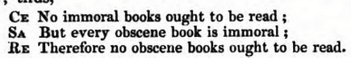
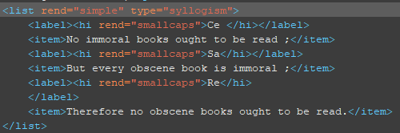

Lists
Formatting lists in TEI
A
<list> is an organized series of items. They may be
unmarked, numbered, or alphabetized. For accuracy in the OCR process,
we disable the option in ABBYY FineReader to output lists. However, ocassionally
it will be appropriate to encode output as a list in the TEI. In that
case, use the following guidelines. Restriction: Do not use
<list> for numbered paragraphs of text—which were once in common
stylistic use—unless the paragraphs group or sequence discrete items. | element | attribute | usage |
|---|---|---|
<list> |
contains any sequence of items organized as a list. | |
@type |
||
@rend |
||
<head> |
(heading) contains the heading of a list. | |
<label> |
marks a syllogism, tabular, or glossary list in which each item is associated with a word or phrase rather than a numeric or alphabetic enumerator. NB: if one item in a list is preced by a label, all must be. | |
<item> |
contains one component of a list. | |
@n |
supplies an enumerator for the <item> when
automatic processing is inadequate, similarly to
<label>. |
|
<headLabel> |
the heading for the <label> column of a
tabular list. |
|
<headItem> |
the heading for the <item> column of a tabular
list. |
Tabular list
Lists like a glossary or syllogism use
<label> for each <item>. Thus they
resemble a simple table with two columns. They can present an advantage over tables in
indicating the relationship between the enummerator and list item. In the example below,
the original text demonstrates a syllogism, and the TEI markup follows.


@type
Use <list> with
@type for special lists.
@type value |
description |
|---|---|
| chronology | each list <item> describes an historical
event, with a year or other date that is given by a
<label> element preceding the list
<item>. |
| errata | |
| gloss | each list <item> glosses some term or concept,
which is given by a <label> element preceding the
list <item>. |
| index | each list <item> is an entry in an index such
as the alphabetical topical index at the back of a print volume. |
| instructions | each list <item> is a step in a sequence of
instructions, as in a recipe. |
| litany | each list <item> is one of a sequence of
petitions, supplications or invocations, typically in a religious
ritual. |
| syllogism | each list <item> is part of an argument
consisting of two or more propositions and a final conclusion derived
from them. |
@rend
Use <rend> to
control the physical appearance of the list.
@rend value |
description |
|---|---|
| bulleted | items preceded by bullets or similar marking |
| inline | items rendered within continuous prose, with no linebreaks |
| numbered | items preceded by numbers or letters |
| simple | items rendered as blocks, but with no bullet or number |